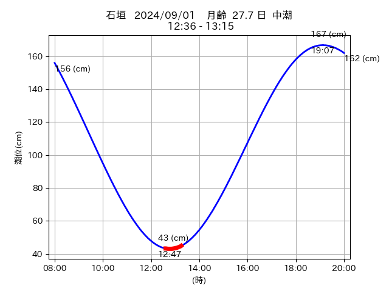

<!DOCTYPE html>
<html>
<head>
    
    <meta http-equiv="content-type" content="text/html; charset=UTF-8" />
    
        <script>
            L_NO_TOUCH = false;
            L_DISABLE_3D = false;
        </script>
    
    <style>html, body {width: 100%;height: 100%;margin: 0;padding: 0;}</style>
    <style>#map {position:absolute;top:0;bottom:0;right:0;left:0;}</style>
    <script src="https://cdn.jsdelivr.net/npm/leaflet@1.9.3/dist/leaflet.js"></script>
    <script src="https://code.jquery.com/jquery-1.12.4.min.js"></script>
    <script src="https://cdn.jsdelivr.net/npm/bootstrap@5.2.2/dist/js/bootstrap.bundle.min.js"></script>
    <script src="https://cdnjs.cloudflare.com/ajax/libs/Leaflet.awesome-markers/2.0.2/leaflet.awesome-markers.js"></script>
    <link rel="stylesheet" href="https://cdn.jsdelivr.net/npm/leaflet@1.9.3/dist/leaflet.css"/>
    <link rel="stylesheet" href="https://cdn.jsdelivr.net/npm/bootstrap@5.2.2/dist/css/bootstrap.min.css"/>
    <link rel="stylesheet" href="https://netdna.bootstrapcdn.com/bootstrap/3.0.0/css/bootstrap.min.css"/>
    <link rel="stylesheet" href="https://cdn.jsdelivr.net/npm/@fortawesome/fontawesome-free@6.2.0/css/all.min.css"/>
    <link rel="stylesheet" href="https://cdnjs.cloudflare.com/ajax/libs/Leaflet.awesome-markers/2.0.2/leaflet.awesome-markers.css"/>
    <link rel="stylesheet" href="https://cdn.jsdelivr.net/gh/python-visualization/folium/folium/templates/leaflet.awesome.rotate.min.css"/>
    
            <meta name="viewport" content="width=device-width,
                initial-scale=1.0, maximum-scale=1.0, user-scalable=no" />
            <style>
                #map_425b8f600a38158bc75fb78940c9d840 {
                    position: relative;
                    width: 2048.0px;
                    height: 1600.0px;
                    left: 0.0%;
                    top: 0.0%;
                }
                .leaflet-container { font-size: 1rem; }
            </style>
        
</head>
<body>
    
    
            <div class="folium-map" id="map_425b8f600a38158bc75fb78940c9d840" ></div>
        
</body>
<script>
    
    
            var map_425b8f600a38158bc75fb78940c9d840 = L.map(
                "map_425b8f600a38158bc75fb78940c9d840",
                {
                    center: [24.194, 123.567],
                    crs: L.CRS.EPSG3857,
                    zoom: 12,
                    zoomControl: true,
                    preferCanvas: false,
                }
            );

            

        
    
            var tile_layer_e774f3f34b8ed182ee11607607fb4b60 = L.tileLayer(
                "https://cyberjapandata.gsi.go.jp/xyz/seamlessphoto/{z}/{x}/{y}.jpg",
                {"attribution": "\u5730\u7406\u9662\u5730\u56f3", "detectRetina": false, "maxNativeZoom": 18, "maxZoom": 18, "minZoom": 0, "noWrap": false, "opacity": 1, "subdomains": "abc", "tms": false}
            ).addTo(map_425b8f600a38158bc75fb78940c9d840);
        
    
            var marker_fe256791245fce82ed3b8934a76f7f21 = L.marker(
                [24.191, 123.555],
                {}
            ).addTo(map_425b8f600a38158bc75fb78940c9d840);
        
    
            var icon_627d1aab15737e7f33f614d856ef44ac = L.AwesomeMarkers.icon(
                {"extraClasses": "fa-rotate-0", "icon": "info-sign", "iconColor": "white", "markerColor": "orange", "prefix": "glyphicon"}
            );
            marker_fe256791245fce82ed3b8934a76f7f21.setIcon(icon_627d1aab15737e7f33f614d856ef44ac);
        
    
        var popup_b4828b117f56daa669ecdb7fcb6b28e8 = L.popup({"maxWidth": "100%"});

        
            
                var html_4e42544b39bf3eaca55f0e10b8b01f22 = $(`<div id="html_4e42544b39bf3eaca55f0e10b8b01f22" style="width: 100.0%; height: 100.0%;"><table><tr><td></td></tr><tr><td><center>20240901 No.1 </center></table></td></tr></table</div>`)[0];
                popup_b4828b117f56daa669ecdb7fcb6b28e8.setContent(html_4e42544b39bf3eaca55f0e10b8b01f22);
            
        

        marker_fe256791245fce82ed3b8934a76f7f21.bindPopup(popup_b4828b117f56daa669ecdb7fcb6b28e8)
        ;

        
    
    
            var poly_line_3b37e761449a332403af9eba5bf0c023 = L.polyline(
                [[24.191, 123.555], [24.19, 123.548]],
                {"bubblingMouseEvents": true, "color": "#00FFFF", "dashArray": null, "dashOffset": null, "fill": false, "fillColor": "#00FFFF", "fillOpacity": 0.2, "fillRule": "evenodd", "lineCap": "round", "lineJoin": "round", "noClip": false, "opacity": 1.0, "smoothFactor": 1.0, "stroke": true, "weight": 3}
            ).addTo(map_425b8f600a38158bc75fb78940c9d840);
        
    
            var marker_8604f7417784678da29bfb677a0d37a0 = L.marker(
                [24.196, 123.571],
                {}
            ).addTo(map_425b8f600a38158bc75fb78940c9d840);
        
    
            var icon_c6ddff0e61297b2881ff12115402a50e = L.AwesomeMarkers.icon(
                {"extraClasses": "fa-rotate-0", "icon": "info-sign", "iconColor": "white", "markerColor": "orange", "prefix": "glyphicon"}
            );
            marker_8604f7417784678da29bfb677a0d37a0.setIcon(icon_c6ddff0e61297b2881ff12115402a50e);
        
    
        var popup_1e841379c621d5f82e12d3a05a30bcff = L.popup({"maxWidth": "100%"});

        
            
                var html_8b49c4ff4a5c2b0ffea08fc5c7e001de = $(`<div id="html_8b49c4ff4a5c2b0ffea08fc5c7e001de" style="width: 100.0%; height: 100.0%;"><table><tr><td></td></tr><tr><td><center>20240901 No.2 </center></table></td></tr></table</div>`)[0];
                popup_1e841379c621d5f82e12d3a05a30bcff.setContent(html_8b49c4ff4a5c2b0ffea08fc5c7e001de);
            
        

        marker_8604f7417784678da29bfb677a0d37a0.bindPopup(popup_1e841379c621d5f82e12d3a05a30bcff)
        ;

        
    
    
            var poly_line_f111c93948b9a92a719f649011171135 = L.polyline(
                [[24.196, 123.571], [24.193, 123.573]],
                {"bubblingMouseEvents": true, "color": "#00FFFF", "dashArray": null, "dashOffset": null, "fill": false, "fillColor": "#00FFFF", "fillOpacity": 0.2, "fillRule": "evenodd", "lineCap": "round", "lineJoin": "round", "noClip": false, "opacity": 1.0, "smoothFactor": 1.0, "stroke": true, "weight": 3}
            ).addTo(map_425b8f600a38158bc75fb78940c9d840);
        
    
            var marker_f01891efed260291f970591b4e56d93d = L.marker(
                [24.196, 123.573],
                {}
            ).addTo(map_425b8f600a38158bc75fb78940c9d840);
        
    
            var icon_4709008c78619d14045333b7cfa8d3f0 = L.AwesomeMarkers.icon(
                {"extraClasses": "fa-rotate-0", "icon": "info-sign", "iconColor": "white", "markerColor": "orange", "prefix": "glyphicon"}
            );
            marker_f01891efed260291f970591b4e56d93d.setIcon(icon_4709008c78619d14045333b7cfa8d3f0);
        
    
        var popup_942cdff0e0efa96485133d0fa975d727 = L.popup({"maxWidth": "100%"});

        
            
                var html_fabf760f9568dd754ca185dcbea69cd2 = $(`<div id="html_fabf760f9568dd754ca185dcbea69cd2" style="width: 100.0%; height: 100.0%;"><table><tr><td></td></tr><tr><td><center>20240901 No.3 </center></table></td></tr></table</div>`)[0];
                popup_942cdff0e0efa96485133d0fa975d727.setContent(html_fabf760f9568dd754ca185dcbea69cd2);
            
        

        marker_f01891efed260291f970591b4e56d93d.bindPopup(popup_942cdff0e0efa96485133d0fa975d727)
        ;

        
    
    
            var poly_line_0c97986435af3c5d252c27375d585403 = L.polyline(
                [[24.196, 123.573], [24.195, 123.573]],
                {"bubblingMouseEvents": true, "color": "#00FFFF", "dashArray": null, "dashOffset": null, "fill": false, "fillColor": "#00FFFF", "fillOpacity": 0.2, "fillRule": "evenodd", "lineCap": "round", "lineJoin": "round", "noClip": false, "opacity": 1.0, "smoothFactor": 1.0, "stroke": true, "weight": 3}
            ).addTo(map_425b8f600a38158bc75fb78940c9d840);
        
    
            var marker_373b40b45c5d589c53e002394e0dc32b = L.marker(
                [24.194, 123.568],
                {}
            ).addTo(map_425b8f600a38158bc75fb78940c9d840);
        
    
            var icon_125a4b9493cf054343dcb84cc6fe2099 = L.AwesomeMarkers.icon(
                {"extraClasses": "fa-rotate-0", "icon": "info-sign", "iconColor": "white", "markerColor": "orange", "prefix": "glyphicon"}
            );
            marker_373b40b45c5d589c53e002394e0dc32b.setIcon(icon_125a4b9493cf054343dcb84cc6fe2099);
        
    
        var popup_b161777416ffc0d4d99e4f8451e803e0 = L.popup({"maxWidth": "100%"});

        
            
                var html_02f615e40d221a54236471749a19a748 = $(`<div id="html_02f615e40d221a54236471749a19a748" style="width: 100.0%; height: 100.0%;"><table><tr><td></td></tr><tr><td><center>20240901 No.4 </center></table></td></tr></table</div>`)[0];
                popup_b161777416ffc0d4d99e4f8451e803e0.setContent(html_02f615e40d221a54236471749a19a748);
            
        

        marker_373b40b45c5d589c53e002394e0dc32b.bindPopup(popup_b161777416ffc0d4d99e4f8451e803e0)
        ;

        
    
    
            var poly_line_870db070519ff8583124f7f2ab71d15d = L.polyline(
                [[24.194, 123.568], [24.197, 123.573]],
                {"bubblingMouseEvents": true, "color": "#FF00FF", "dashArray": null, "dashOffset": null, "fill": false, "fillColor": "#FF00FF", "fillOpacity": 0.2, "fillRule": "evenodd", "lineCap": "round", "lineJoin": "round", "noClip": false, "opacity": 1.0, "smoothFactor": 1.0, "stroke": true, "weight": 3}
            ).addTo(map_425b8f600a38158bc75fb78940c9d840);
        
</script>
</html>